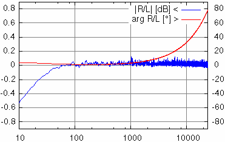
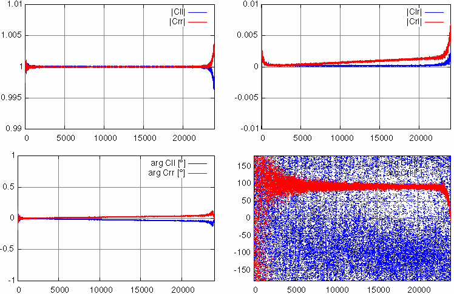

Release: 0.1
Beschreibung Anleitung Referenz Kalibrierung Download Historie Todo CompilierenDieses Programm generiert Sinus-Referenzsignale unterschiedlicher Frequenz und analysiert die zeitgleich einlaufenden Messdaten. Die Ergebnisse werden in eine Textdatei fortgeschrieben.
Die (plattformabhängige) Aus und Eingabe der PCM-Daten sowie eine eventuelle Pufferung, um die Datenentsorgung in Echtzeit sicherzustellen, muss anderwärtig erfolgen.
Das Programm liegt als C++-Quelltext vor und sollte sich mit vertretbarem Aufwand auf anderen Plattform übersetzen lassen.
Zuallererst muss die Analyse der Messantwort auf das Referenzsignal synchronisiert werden. Darüber wird dann die Steuerung der Messzeitfenster bestimmt. Einmal synchronisiert zählen sowohl Referenzsignalgenerator als auch die Analyse nur noch gemeinsam nach dem gleichen Schema die Samples. Deshalb ist es essentiell, dass die Parametrisierung identisch ist.
Zudem muss sowohl die Wiedergabe des Referenzsignals als auch die Aufnahme der Messantwort auf sample-genau synchron laufenden Sounddevices erfolgen. Dazu braucht es entweder einunddieselbe Soundkarte oder World-Clock.
Mit der Synchronisation werden unbekannte Latenzen im Signalverarbeitungsprozess kompensiert. Diese können aus I/O-Puffer kommen oder aber einfach dadurch, dass die Analyseseite nicht exakt zeitgleich zum Referenzsignal gestartet wurde. Alle Latenzen, die im Rahmen des Synchronisationszeitfensters noch erfasst werden, haben keine Auswirkung auf das Messergebnis. Es ist daher sinnvoll, die I/O-Puffer eher großzügig zu gestalten, denn Sample-Drops haben sehr wohl Auswirkung auf das Ergebnis.
Technisch gesehen findet die Synchronisation immer bei 1/4 der Nyquist-Frequenz mit einem 180° Phasensprung statt. Das Übertragungsverhalten des Messobjektes spielt dabei allerdings keine Rolle, weil nur mit dem parallel aufgezeichneten Referenzsignal synchronisiert wird.
Einmal synchronisiert, werden für jede zu messende Frequenz die nachfolgenden Schritte durchgeführt.
Das Programm verwendet, anders als der Name suggeriert, keinen stufenlosen Frequenzscan. Statt dessen wird bei einzelnen, diskreten Frequenzen gemessen, die alle eine Harmonische der durch die Datensatzgröße festgelegten Grundfrequenz sind. Dies ist genauer.
Die Frequenzen müssen aber nicht linear verteilt (äquidistant) sein. Über den Parameter flog kann ein Mindestabstand benachbarter Frequenzen gewährleistet werden.
Unmittelbar nach einer Frequenzänderung wartet das Analyseprogramm erstmal eine gewisse Zeit, bis sich das zu messende System in einem stabilen Zustand ohne Nachwirkungen der letzten Messfrequenz befindet.
Wie lange eine sinnvolle Einschwingzeit ist, hängt letztlich von der Frequenz und der Resonanzgüte der zu messenden Objekte ab. Sinnvolle Werte liegen in der Größenordnung von 3Q/f.
Nun werden die Daten zu einer Frequenz erfasst. Hier kann über mehrere Datensatzgrößen gemittelt werden, um die Genauigkeit zu erhöhen. Aufgrund der Synchronität zwischen Referenzsignal und Analyse hat dieser Parameter unmittelbaren Einfluss auf das Signal-Untergrundverhältnis. Alle nicht mit den analysierten Frequenzen synchronen Störungen können mit genügend Messzeit ausgeblendet werden. Das gilt auch für das Rauschen der Soundkarte. Dadurch können mit diesem Messverfahren selbst mit räudigen Onboard-Soundkarten hochpräzise Ergebnisse ermittelt werden.
Die aufgenommenen Informationen werden analysiert und an die Ausgabedatei angehängt. Während dieser Zeit nimmt das Programm keine Daten entgegen. Der Ringpuffer für die Aufnahme muss daher groß genug sein um diese Zeit zu überbrücken.
Um die Auswirkungen einer nicht 100% sitzenden Synchronisation und unterschiedlicher Gruppenlaufzeiten zu kompensieren, läuft das Referenzsignal nach Abschluss der Messung noch einen Moment nach, bevor die Frequenz wechselt.
Das Programm endet, wenn die letzte vorgesehene Frequenz gemessen und/oder erzeugt ist, der Eingabedatenstrom geschlossen wurde oder ein Interrupt-Signal gesendet wird (z.B. Ctrl-C).
Das Programm kennt drei Betriebsmodi:
- nur Referenzsignal erzeugen,
- nur Messantwort analysieren und
- Referenzsignal erzeugen und gleichzeitig Messantwort analysieren.
Die Komponenten zum Erzeugen des Referenzsignals und zum analysieren der Messantwort laufen komplett unabhängig in eigenen Threads.
Wenn die Referenzerzeugung und die Analyse in unterschiedlichen Programminstanzen laufen, ist streng darauf zu achten, dass beide Instanzen mit den gleichen Parametern gestartet werden, andernfalls ist das Ergebnis undefiniert. Lediglich der Parameter für den Messmodus sollte sich unterscheiden.
Beim Erzeugen des Referenzsignals schreibt das Programm 16-Bit PCM-kodierte Daten in 2 Kanälen mit einem RIFF-Wave kompatiblen Header. Standardmäßig erfolgt die Ausgabe nach stdout und kann per Pipe zum Sounddevice umgeleitet werden. Sollte es sich bei dem Ziel um ein RAW-Device handeln, dass keinen WAV-Header benötigt, führt das nur zu einem leichten Störgeräusch am Anfang, was von der Synchronisation des Analyseteils ignoriert wird.
Das Programm erzeugt das Referenzsignal entweder in mono oder symmetrisch. In letzterem Fall erfolgt die Ausgabe auf dem linken und rechten Kanal invers.
Das Programm liest kontinuierlich 16-Bit PCM-kodierte Daten in 2 Kanälen von stdin, einer Datei oder einem Device und analysiert sie. Die Ergebnisse werden dann nach jeder Messfrequenz in die Datei data.dat und/oder auf den Bildschirm (stderr) geschrieben. Danach kann optional ein Befehl über stdout ausgegeben werden, z.B. zur Steuerung von Gnuplot.
Die Analyse erfolgt immer aufgrund des gleichzeitig aufgezeichneten Referenzsignals und niemals auf Basis der theoretischen Kenntnis des Referenzsignals. Daher muss einer der zwei Stereoeingänge stets das Referenzsignal enthalten. Näheres siehe Scanmodus.
@@@TODO
- alnum
- Mehrere Zyklen addieren. Dabei werden erst die Rohdaten von num Messzyklen addiert, bevor die Analyse startet.
- bnnum
- Länge der Datenblöcke auf num Samples festlegen. Diese Zahl ist nach einer eventuellen Zusammenfassung von Samples durch die Option ca zu verstehen. Ohne die Option bn wird eine Standardlänge von 8192 Samples verwendet.
- canum
- Addiert immer num benachbarte Samples bei der Verarbeitung der PCM-Daten. Dieses Feature kann genutzt werden, um die Samplingrate zu drücken und gleichzeitig das Rauschen zu mindern. Es handelt sich dabei nicht um eine geeignete Methode zum Downsampeln, sondern eher um eine Methode zur reduktion des ADC-Rauschens.
Fehlt der Parameter num, so werden je 2 Samples addiert und die effektive Samplingrate halbiert.- dffilename
- Name der Datendatei, die bei aktivierter Option wd (regelmäßig) geschrieben wird. Standardmäßig heisst die Datei data.dat.
- execcommand
- Kommando, das nach dem Aktualisieren der Daten jedesmal ausgeführt wird. Achtung! Das Analyseprogramm stoppt bis zur Beendung des Kommandos. Das kann bei der Echtzeitverarbeitung der Daten problematisch werden. Daher ist im allgemeinen die Synchronisation über stdout (Option plot) vorzuziehen.
- fminfreq und fmaxfreq
- Minimale und maximale Frequenz beim Frequenzscan. Diese Einstellung wirkt sich auf alle Folgeprozesse einschließlich der Berechnung der Kalibrierungsdaten etc. aus.
- fqfreq
- Primäre Samplingfrequenz vor einer eventuellen Reduzierung durch Sampleaddition. Dieser Parameter sollte immer angegeben werden, da er für dieverse Normierungen benötigt wird. Unter anderem bei der Bildung zeitlicher Ableitungen.
Ohne den Parameter wird derzeit fon einer Samplingfrequenz von 48 kHz ausgegangen. Zukünftige Programmversionen könnten dies jedoch als einen Fehler werten.- g2ffilename
- Dateiname für die Differenzdatei bei der Validierung der Gain-Kalibrierung. Siehe Option gd.
- gd
- Validierung der Gainkalibrierung durchführen. Mit dieser Option wird eine vorhandene Gain-Kalibrierung aus der Datei gain.dat oder der mit der Option gf angegebenen Datei angewendet und die sich danach immernoch ergebenden Gain-Abweichungen in die Datei gainD.dat oder die mit der Option g2f angegebene Datei geschrieben. Diese Option ist hauptsächlich zur Fehlersuche hilfreich.
- gf
- Dateiname für die Gainkalibrierung. Dieser Dateiname ist für die Funktionen gg und gr relevant. Standardmäßig heisst die Datei gain.dat.
- gg
- Gainkalibrierung durchführen. Das Ergebnis wird in die Datei gain.dat oder der mit der Option gf angegebenen Datei geschrieben. →Dateiformat
- gr
- Gainkalibrierung aus einer früheren Kalibrierungsmessung verwenden. Die Daten werden aus der Datei gain.dat oder der mit der Option gf angegebenen Datei gelesen. →Dateiformat
- hd
- Automatische Gewichtungsfunktion für den differenziellen Scanmodus scm1 aktivieren.
- infilename
- PCM-Daten aus filename lesen (anstelle von stdin). Der angegebene Name kann auch ein transienter Datenstrom, wie z.B. eine Pipe (FiFo) oder ein Device sein.
- lnnum
- num Einzelanalysen in Folge durchführen und das Programm danach beenden. Standardmäßig wird nur exakt ein Durchlauf ausgeführt.
- loop
- Endlosmodus. Das Programm kann nur durch ein Ende der Eingabedaten oder einer Abbruch gestoppt werden.
- lpnum
- Anzahl der zu verwerfenden Datenblöcke in der Pause der Nullwert-Kalibrierung (Option zg).
- plotcommand
- Kommando nach jedem Analyseergebnis über stdout als eigene Zeile ausgeben. Dies kann z.B. verwendet werden, um eine grafische Visualisierung z.B. durch Gnuplot in Echtzeit zu aktualisieren. Diese Option kann nicht gleichzeitig zur Ausgabe des Referenzsignals nach stdout verwendet werden.
- psanum
- Die ersten num Samples verwerfen. Dies kann benutzt werden, um eventuelle Header-Daten in einem PCM-Datenstrom zu überspringen (z.B. pca11 für .WAV-Dateien).
- pte
- Nach Beendigung der Messung weiterhin Daten lesen, diese jedoch verwerfen. Dies kann nützlich sein, wenn Echtzeit-Datenquellen allergisch reagieren, wenn sie ihren Daten nicht mehr los werden und auf anderem Wege gestoppt werden müssen. Das verhindert letztlich auch das Programmende, solange noch Eingabedaten kommen. Wenn der Eingabedatenstrom abbricht, wird das Programm dann beendet.
- rffilename
- Dateiname für die Ausgabe der Quelldaten (Option wr). Standardmäßig heißt die Datei raw.dat.
- rrefres
- Referenzwiderstand res bei der Analyse von Impedanzdaten berücksichtigen. Standardmäßig wird ein Wert von 1.0 verwendet. Das ist auch dann zu verwenden, wenn die Umrechnung bereits an anderer Stelle bei der Datenaufbereitung erfolgt.
- scm0, scm1 oder scm2
- Modus bei der Entgegennahme der PCM-Daten:
Der Differenzmodus ist praktisch, weil er sehr einfache Impedanzmessungen durch die Reihenschaltung eines Referenzwiderstandes mit der zu messenden Impedanz ohne Instrumentenverstärker erlaubt. Allerding reagiert dieser Modus aufgrund der Differenzbildung von ähnlich großen Zahlen auch sehr allergisch auf kleinste Asymmetrien zwischen den beiden Kanälen.
- scm0 – PCM-Reihenfolge: Kanal 1 = U(t), Kanal 2 = I(t)
- scm1 – Differenzmodus: U(t) = Kanal 1, I(t) = Kanal 2 − Kanal 1
- scm2 – Kanäle vertauschen: Kanal 1 = I(t), Kanal 2 = U(t)
- wd
- Ausführliche Ergebnisse nach Analyse jeder Messfrequenz an die Datei data.dat oder die mit der Option df angegebene Datei anhängen. →Dateiformat
- wr
- Rohdaten in die Datei raw.dat oder die mit der Option rf angegebene Datei schreiben. Das sind die Daten, wie sie aus dem Eingabedatenstrom kommen. Die Option ist normalerweise nur zur Fehlersuche gedacht. →Dateiformat
- z2ffilename
- Dateiname für die Differenzdatei bei der Validierung der Null-Kalibrierung. Siehe Option zd.
- zd
- Validierung der Null-Kalibrierung durchführen. Mit dieser Option wird eine vorhandene Null-Kalibrierung aus der Datei zero.dat oder der mit der Option zf angegebenen Datei angewendet und die sich danach immernoch ergebenden Nullwert-Abweichungen in die Datei zeroD.dat oder die mit der Option z2f angegebene Datei geschrieben. Diese Option ist hauptsächlich zur Fehlersuche hilfreich.
- zf
- Dateiname für die Gainkalibrierung. Dieser Dateiname ist für die Funktionen zg und zr relevant. Standardmäßig heisst die Datei zero.dat.
- zg
- Null-Kalibrierung durchführen. Das Ergebnis wird in die Datei zero.dat oder der mit der Option zf angegebenen Datei geschrieben.
- zn
- Amplituden normalisieren. Dabei wird die Summe der komplexen Amplituden von Kanal 1 und Kanal 2 für alle Frequenzkanäle einzeln vor der Weiterverarbeitung auf konstant 1 normiert. Dies hat bei Impedanzmessungen zunächst einmal keine Auswirkung, da nur die relativen, komplexen Amplituden (U(f) / I(f)) verwendet werden. Sollen jedoch die Ergebnisse verschiedener Messungen direkt ins Verhältnis gesetzt werden, wie es bei der Null-Kalibrierung der Fall ist, bekommt diese Option durchaus Relevanz, da nun auch Daten ins Verhältnis gesetzt werden können, bei denen das Referenzsignal aus technischen Gründen nicht exakt übereinstimmt.
- zr
- Null-Kalibrierung aus einer früheren Kalibrierungsmessung verwenden. Die Daten werden aus der Datei zero.dat oder der mit der Option zf angegebenen Datei gelesen. →Dateiformat
Alle Dateien sind ASCII-Dateien, die aus tabulator-separierten, numerischen Spalten bestehen. Es gibt derzeit keine Spaltenüberschriften. Die Daten beginnen sofort mit Zeile 1. Zukünftige Programmversionen könnten jedoch eine Überschriftszeile generieren. Diese ist an einem # im ersten Zeichen zu erkennen und ebenfalls tabulator-separiert. Im folgenden sind die Bedeutungen der einzelnen Spalten beschrieben.
Spalte Kurzbezeichnung Beschreibung $1 f Frequenz $2 |U| Amplitude von U(f) $3 arg U Phase von U(f) in Grad $4 |I| Amplitude von I(f) $5 arg I Phase von I(f) in Grad $6 |U/I| Amplitude der Impedanz U(f)/I(f) $7 arg U/I Phase der Impedanz U(f)/I(f) in Grad $8 re U/I Realteil der Impedanz U(f)/I(f) $9 im U/I Imaginärteil der Impedanz U(f)/I(f) $10 weight relativer Gewichtungsfaktor $11 delay Gruppenlaufzeit d(U/I)/dω, ergibt nur für Vierpolmessungen Sinn. Für Vierpolmessungen ist I(f) durch das Eingangssignal zu ersetzen und U(f) durch das Ausgangssignal.
Aus den obigen Spalten können folgende, frequenzabhängigen Werte wie folgt berechnet werden:
Symbol Bezeichnung Formel Einheit Bemerkung ESR Äquivalenter Serienwiderstand $8 · Rref Ω
ESC Äquivalente Serienkapazität
-1 2π · $1 · $9 · Rref F nur, wenn $9 ≤ 0 ESL Äquivalente Serieninduktivität
$9 · Rref 2π · $1 H nur, wenn $9 ≥ 0 |Z| Betrag der Impedanz $6 · Rref Ω
Q Effektive Güte |$9| / $8
Spalte Kurzbezeichnung Beschreibung - Zeilennummer Die Zeilen werden in der Reihenfolge der FFT-Frequenzen geschrieben, enthalten jedoch nicht die Frequenzkennung. $1 re Realteil $2 im Imaginärteil $3 abs Betrag $4 arg Phase in Grad Beim Einlesen der Datei gain.dat mit der Option gr oder gd werden nur die ersten beiden Spalten verwendet.
Spalte Kurzbezeichnung Beschreibung - Zeilennummer Die Zeilen werden in der Reihenfolge der FFT-Frequenzen geschrieben, enthalten jedoch nicht die Frequenzkennung. $1 re cll Realteil Koeffizient cll $2 im cll Imaginärteil Koeffizient cll $3 re clr Realteil Koeffizient clr $4 im clr Imaginärteil Koeffizient clr $5 re crl Realteil Koeffizient crl $6 im crl Imaginärteil Koeffizient crl $7 re crr Realteil Koeffizient crr $8 im crr Imaginärteil Koeffizient crr $9 abs cll Betrag Koeffizient cll $10 arg cll Phase Koeffizient cll in Grad $11 abs clr Betrag Koeffizient clr $12 arg clr Phase Koeffizient clr in Grad $13 abs crl Betrag Koeffizient crl $14 arg crl Phase Koeffizient crl in Grad $15 abs crr Betrag Koeffizient crr $16 arg crr Phase Koeffizient crr in Grad Diese Datei enthält ein Array von komplexen 2×2 Matrizen der Form
. Beim Einlesen der Datei über die Option zr oder zd werden nur die ersten 8 Spalten verwendet. →Null-Kalibrierung
cll clr crl crr Die semantische Bedeutung der Koeffizienten ist:
Koeffizient Bedeutung cll Verstärkung für Kanal 1 clr Übersprechen von Kanal 2 auf Kanal 1 crl Übersprechen von Kanal 1 auf Kanal 2 crr Verstärkung für Kanal 2
Spalte Kurzbezeichnung Beschreibung - Zeilennummer Index des Samples 1 win Wert der Fensterfunktion zum betreffenden Sample
Spalte Kurzbezeichnung Beschreibung - Zeilennummer Index des Samples 1 L Wert des Samples von Kanal 1 1 R Wert des Samples von Kanal 2
Bei der einfachsten Art der Kalibrierung wird mit einer Messung lediglich der Gleichlauf der beiden Kanäle korrigiert. Damit können Torleranzen der Soundkarten sowie bauartbedingte Phasenverschiebungen zwischen den beiden Kanälen korrigiert werden. Das ist besonders dann wichtig, wenn im differentiellen Scan-Modus (scm1) gearbeitet wird.
Durchführung
Zur Gain-Kalibrierung müssen beide Kanäle von Line-In mit einem der Line-Out Ausgänge verbunden werden. Anschließend ist mit weißem Rauschen eine Kalibrierung mit der Kommandozeilenoption gg durchzuführen. Die FFT- und Samplingparameter müssen dabei mit denen bei der zu korrigierenden realen Messung übereinstimmen.
Ergebnis

Beispiel für eine Gain-Korrektur: Terratec XLerate (Aureal AU8820 Chip) bei 48kHz und einer FFT-Länge von 65536 Samples, gemittelt über ca. 10 Zyklen.
Der Amplitudenfehler ist mit < 0,1dB ziemlich gut, aber die Kanäle werden offenbar nicht exakt gleichzeitig gesampelt. Die Verschiebung von ¼ Sample bei der Nyquistfrequenz deutet auf eine serielle Konertierung der Kanäle sowie ein Zweifach-Oversampling zur Verminderung von Aliasing hin.Das Resultat der Korrektur ist der komplexe, frequenzabhängige Quotient:
gain_korr(f) = FFT(Kanal 2) FFT(Kanal 1) Der Betrag der Korrektur ist ein frequenzabhängiges Maß für unterschiedliche Verstärkungsfaktoren bei den beiden Stereokanälen. Typischerweise ist der Wert weitgehend frequenzabhängig aber leicht verschieden von eins. Das kommt durch Bauteiltoleranzen bei den Widerständen. Bei niedrigen Frequenzen gibt es üblicherweise eine Größere Abweichung. Das kommt durch Toleranzen bei den Koppelkondensatoren.
Die Phase ist ein Maß für den zeitlichen Gleichlauf der Kanäle. Typischerweise gibt es außer der ebenfalls auf die Koppelkondensatoren zurückzuführenden Abweichung bei niedrigen Frequenzen hier keine Besonderheiten. Manche Soundkarten digitalisieren aber den rechten und den linken Kanal abwechselnd mit einem gemeinsamen ADC. Dadurch sind die Signale um ein halbes Sample zeitverschoben, was sich in einem linearen Anstieg der Phasendifferenz mit der Frequenz äußert.
Korrektur
Bei der Anwendung der Korrektur wird willkürlich nur Kanal 1 korrigiert, da die Korrektur ohnehin nur relativ ist.
Die bessere Art der Kalibrieirung für Impedanzmessungen (2-Pol) ist die Null-Kalibrierung. Bei dieser wird neben dem Verstärkungsfaktoren auch noch das Übersprechen mit berücksichtigt. Es handelt sich um eine Zwei-Punkt-Kalibrierung.
Unter Berücksichtigung von Lideal ∝ U und Rideal ∝ I · Rref ergibt sich die die reale Impedanz:
Z = Lideal · Rref Rideal In Realität hat man es aber mit den transformnierten Werten Lreal und Rreal zu tun. Selbstverständlich sind alle Koeffizienten cxx komplex und frequenzabhängig.
Lreal = cll clr · Lideal Rreal crl crr Rideal Durchführung
Zur Null-Kalibirierung wird mit dem gesamten realen Messequipment einmal bei Z = 0 (Lideal = 0) und einmal mit Z = ∞ (Rideal = 0) gemessen, also Kurzschluss und keine Verbindung. Dabei wird neben der Soundkarte auch das gesamte Messequipment mit kalibriert. Wenn eine Kalibrierung mit der Option zg gestartet wird, Erwartet das Analyseprogramm zunächst einmal ln Perioden mit Z = 0. Anschließend kommt eine Bildschrirmausgabe nach stdout und eine kurze Pause. In der Pause muss das Messequipment auf Z = ∞ umgestellt werden. Dann werden nochmal ln Perioden aufgenommen, bevor das Ergebnis feststeht und der Eingabedatenstrom stdin geschlossen wird.
Theoretisch lassen sich alle linearen Fehler ohne absolute Eichung korrigieren. Praktisch gibt es eine Unbekannte zuviel. Man kennt weder Rideal bei Z = 0 noch Lideal bei Z = ∞. Einer der Unbekannten kann man sich entledigen, in dem man willkürlich definiert det C = 1. Das ist insofern erlaubt, als dass die absolute Skalierung bei der Bildung der Quotienten Lideal / Rideal keine Rolle spielt. Eine weitere Unbekannte kann man eliminieren, wenn man animmt, dass das Referenzsignal Uref bei beiden Messungen dasselbe war, und Rref und die Messimpedanz in Reihe geschaltet sind. Dann kann man nähern, dass Uref ∝ Lideal + Rideal ist (siehe Option zn). Dabei macht man einen Fehler: die zusätzlichen zu Rref und Z in Reihe geschalteten Impedanzen allen voran die Zuleitungsinduktivitäten werden nicht berücksichtigt.
Ergebnis

Beispiel für eine Null-Korrektur: Onboard Realtek ALC650 Codec bei 48kHz sowie der gebastelte Messadapter bei 200Ω Rref und einer FFT-Länge von 65536 Samples, gemittelt über ca. 10 Zyklen.
Dargestellt sind die diagonalen (links) und die nichtdiagonalen Koeffizienten (rechts) der Transformationsmatrix jeweils in Betrag (oben) und Phase in Grad (unten).
Man erkennt ein kapazitives Übersprechen vom linken zum rechten Kanal. Die Asymmetrie beim Übersprechen erklärt sich durch die Asymmetrie der Innenschaltung des Messadapter und den definitiv nicht hochfrequenztauglichen Aufbau.
Der Koeffizient clr ist in seiner Amplitude so klein (ca. -70dB), dass die Phase nahezu unbestimmt ist. Daher die relativ willkürliche Verteilung der Phase.Korrektur
Durch Inversion der Transformationsmatrix kann man die gemessenen Werte kompensieren:
-1
Lideal = cll clr · Lreal Rideal crl crr
Rreal